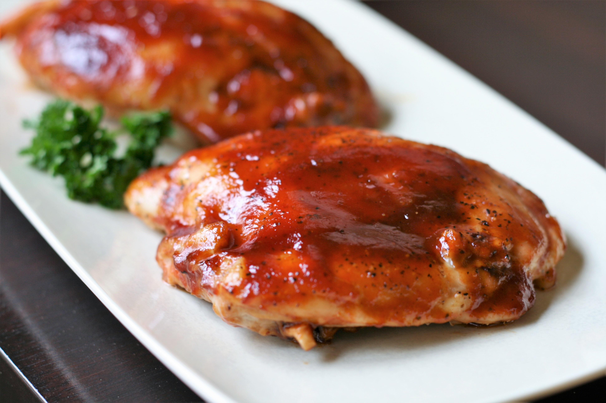

BBQ Chicken Breasts in the Oven

Description:
Make this quick and easy BBQ chicken recipe in the oven for those times when you want a good meal but dont feel like fussing. Nuka a few potatoes for baked, steam some fresh broccoli or saute some green beans, and you got dinner in about an hour.
Ingredients:
- 4 whole skin-on, bone-in chicken breasts
- 1 cup barbecue sauce (such as Sweet Baby Ray's®)
- kosher salt and coarsely ground black pepper to taste
Steps:
- Preheat the oven to 425 degrees F (220 degrees C). Line a baking pan with heavy-duty foil to make cleanup easier.
- Prepare chicken breasts by cutting off the rib meat if you wish and rinse and pat dry. Leave the skin on. Season chicken with salt and pepper and put in the pan.
- Bake in the preheated oven until juices start to appear, about 10 minutes. Reduce oven temperature to 375 degrees F (190 degrees C). Remove the pan and generously pour 1/2 of the barbecue sauce over chicken. Continue to bake for 20 minutes. Repeat with remaining barbecue sauce and cook until no longer pink in the centers and skin is crispy, 15 to 20 minutes more.
- Place in a cold oven; set temperature to 350 degrees F (175 degrees C). Bake until sides are golden brown, 30 to 35 minutes.
Go Back